生存分析基本概念
1. 什么是生存分析？
通常，生存分析是针对结果变量是事件发生时间的一类数据分析统计方法的集合。
所谓时间，指的是从个体开始随访直到事件发生所经过的年、月、周或天数；或者，时间也可以指个体发生事件时的年龄。
所谓事件，指的是死亡、疾病发生、缓解后复发、康复（例如，重返工作岗位）或个体可能发生的任何指定感兴趣的经历。
虽然在同一次分析中可以考虑多个事件，但我们将假设只有一个指定的事件是感兴趣的。
当考虑多个事件时（例如，由多种原因导致的死亡），统计问题可以被描述为复发事件问题或竞争风险问题。
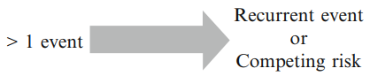
在生存分析中，我们通常将时间变量称为生存时间，因为它给出了个体在某个随访期内“存活”的时间。我们通常也将事件称为失败，因为感兴趣的事件通常是死亡、疾病发生或其他一些负面的个体经历。
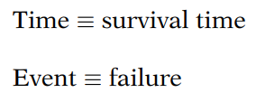
2. 删失数据
删失：我们拥有个体生存时间的部分信息，但并不知道其确切的生存时间。
为什么会出现删失？
- 个体在研究结束前未发生事件；
- 个体在研究期间失访；
- 个体因死亡（如果死亡不是感兴趣的事件）或其他原因（例如，药物不良反应或其他竞争风险）退出研究。
右删失：真实的生存时间大于或等于观察到的生存时间。
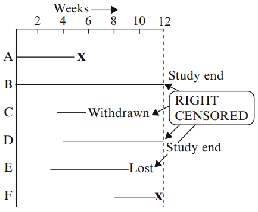
左删失：真实的生存时间小于或等于观察到的生存时间。
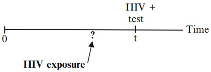
区间删失：真实的生存时间在一个已知的时间区间内。
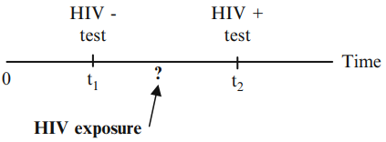
我们如何处理删失数据？
生存分析使用直到删失时间为止的所有信息；不会丢弃信息。
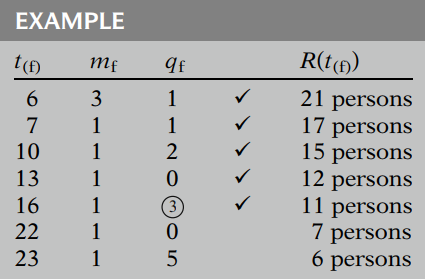
对于在第16周和第22周之间被删失的三个人，我们不想丢失他们每个人至少16周的生存信息。
这三个人被包含在第16周之前（包括第16周）的所有风险集中；也就是说，他们每个人在第16周之前都有发生事件的风险。任何在16周之前（包括16周）确定的生存概率都应该使用这三个人以及其他在前16周内处于风险中的人的数据。
3. 生存函数和风险函数
关键符号：
- T 表示生存时间变量
- t 表示 T 的某个指定值
- d 表示指示事件发生(1)或删失(0)的二值变量
3.1 生存函数：S(t)
生存函数 S(t) 给出了一个人存活时间超过某个指定时间 t 的概率：也就是说，S(t) 给出了随机变量 T 超过指定时间 t 的概率。 $$ S(t)=P(T>t) $$ 理论上，当 \(t\) 从 0 变化到无穷大时，生存函数可以绘制成一条平滑的曲线。
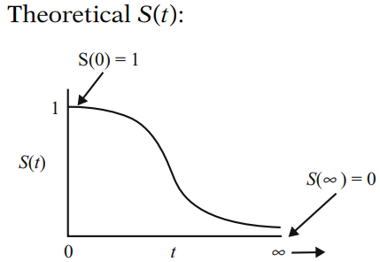
在实践中，使用实际数据时，我们通常得到的是阶梯函数的图形，如图所示，而不是平滑曲线。此外，由于研究期限并非无限长，并且可能存在导致失败的竞争风险，研究中并非每个人都会发生事件。因此，估计的生存函数在研究结束时可能不会完全下降到零。
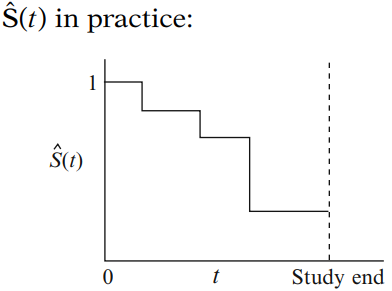
3.2 风险函数：h(t)
风险函数 h(t) 给出了在个体已存活到时间 t 的条件下，事件在单位时间内发生的瞬时可能性。 $$ h(t)=\lim_{\Delta t \to 0} \frac{P(t \le T < t+\Delta t|T\ge t)}{\Delta t} $$ 风险函数（有时称为条件事件率）是一个比率，而不是概率。
此外需注意，风险的大小会受时间的度量单位（日、周、月、年等）影响。
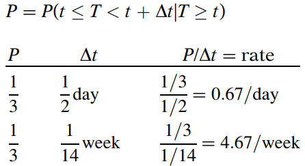
风险函数总是非负的，即大于或等于零，并且没有上限。
不同类型的风险函数
-
当风险函数为常数时，我们称该生存模型为指数模型。
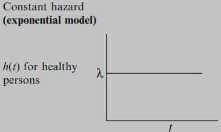
-
当风险函数随时间增加时，我们称之为递增Weibull模型。
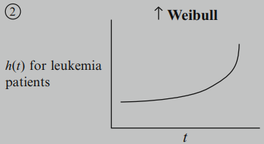
-
当风险函数随时间减少时，我们称之为递减Weibull模型。
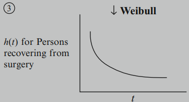
-
当风险函数先增加后减少时，我们称之为对数正态生存模型。
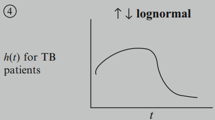
3.3 S(t) 和 h(t) 的关系
S(t): 直接描述生存情况
h(t):
- 瞬时可能性的度量
- 识别特定的模型形式
- 生存分析的数学模型
如果你知道两者之一，就可以确定另一个。一般公式： $$ S(t)=\exp \left[-\int_0^t h(u)du \right] \ h(t)=-\left[\frac{dS(t)/dt}{S(t)}\right] $$
4. 生存分析的目标
目标1： 从生存数据中估计并解释生存函数和/或风险函数。
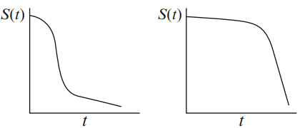
目标2： 比较生存函数和/或风险函数。
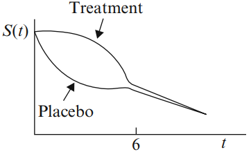
目标3： 评估解释变量与生存时间的关系。
目标3通常需要使用某种形式的数学模型，例如Cox比例风险模型。
5. 生存时间的描述性度量
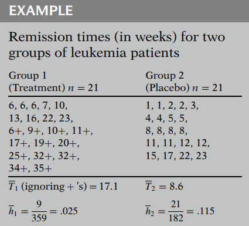
\(\bar T\): (平均生存时间) 忽略表示删失的加号(+)，简单地计算每组所有生存时间的平均值。
\(\bar h\): (平均风险率) 定义为总事件数除以观察到的生存时间之和。 $$ \bar h=\frac{事件数}{\sum\limits_{i=1}^n t_i} $$ 描述性度量（\(\bar T\) 和 \(\bar h\)）提供了总体比较；它们不提供随时间变化的比较（这由生存曲线图提供）。
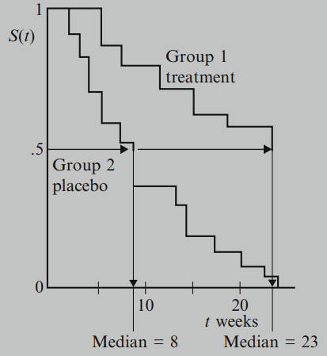
6. 删失假设
对于生存数据，通常考虑三种关于删失的假设：
- 独立（相对于非独立）删失
- 随机（相对于非随机）删失
- 非信息（相对于信息）删失
6.1 独立删失
在任何感兴趣的亚组内，在时间 t 被删失的个体，其生存情况能代表该亚组中所有在时间 t 仍处于风险的个体。
独立删失假设是最有用的一个，且会影响效应估计的有效性。
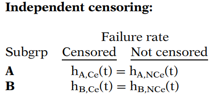
6.2 随机删失
在时间 t 被删失的个体，其生存情况能代表所有在时间 t 仍处于风险的研究对象。
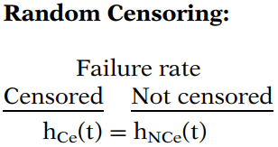
一个例子
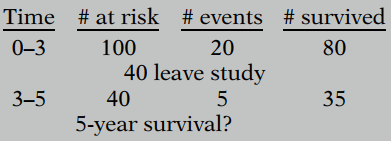
在独立或随机删失的假设下，我们假设被删失的40个个体与仍处于风险的40个个体在生存经验上是相似的：我们估计被删失的40人中也有5人在相同时间段内患病。
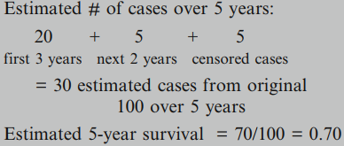
独立和随机删失背后的思想是，在时间 t 被删失的个体，就好像是从时间 t 风险集中的个体中随机选择出来被删失的一样。
6.3 非信息删失
删失是非信息性还是信息性的，取决于两个分布：
- 事件发生时间的分布
- 删失发生时间的分布
如果生存时间(T)的分布不提供关于删失时间(C)分布的任何信息，反之亦然，则发生非信息删失。否则，删失是信息性的。
一个例子
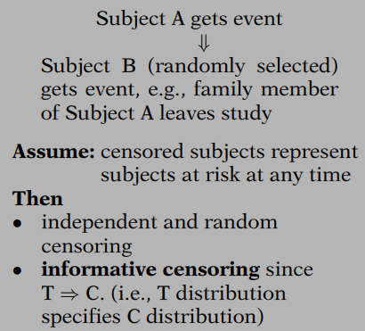
6.4 总结
许多分析技术，例如对数秩检验和Cox模型，依赖于独立删失的假设，以便在存在右删失数据的情况下进行有效推断。